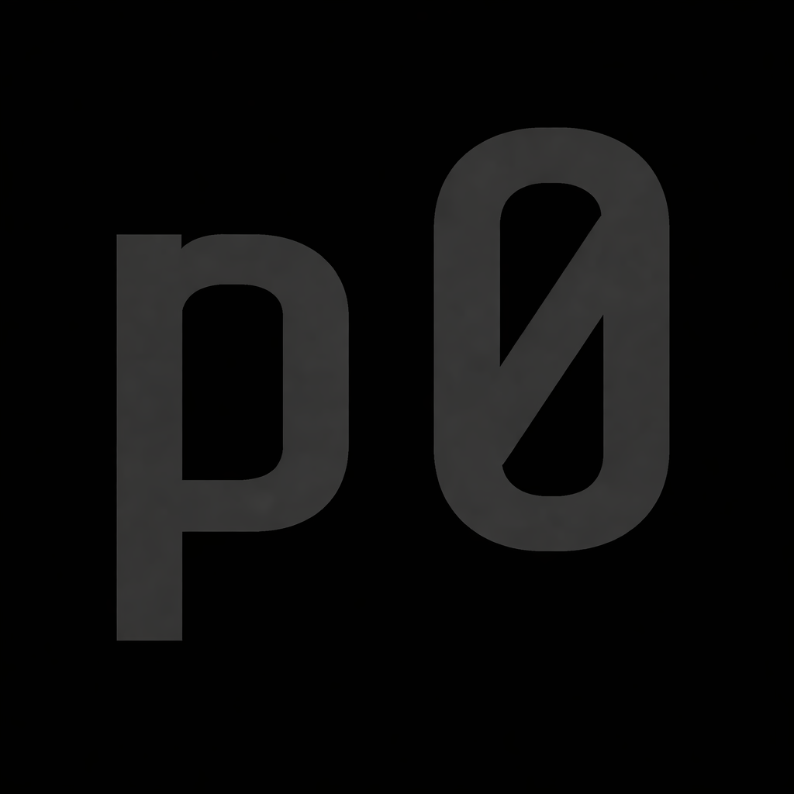

Transitioning to Obsidian
The shift toward a monochromatic brutalist layout: fewer accents, stronger typography, and cleaner structure.

Building minimal digital experiences across software and sound.
The shift toward a monochromatic brutalist layout: fewer accents, stronger typography, and cleaner structure.
Why lower interface complexity improves focus, confidence, and long-term maintainability.